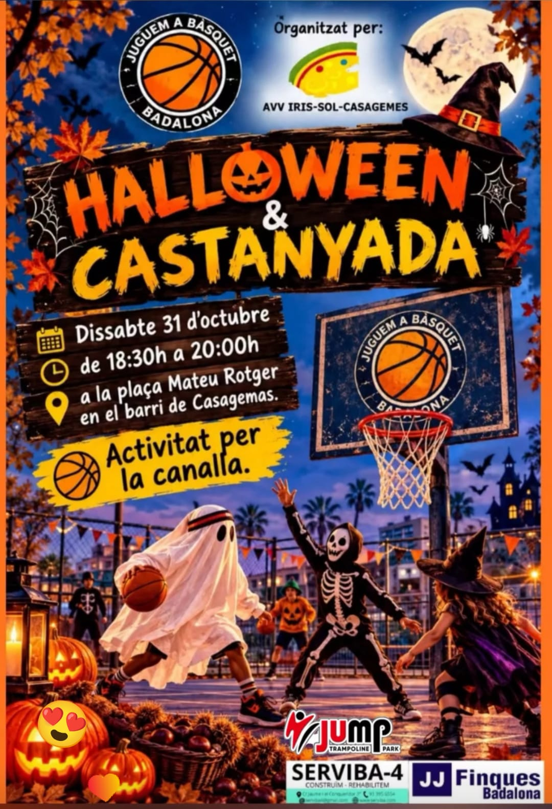
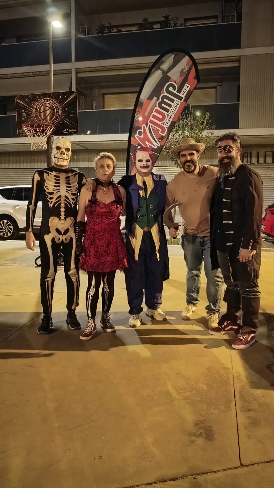
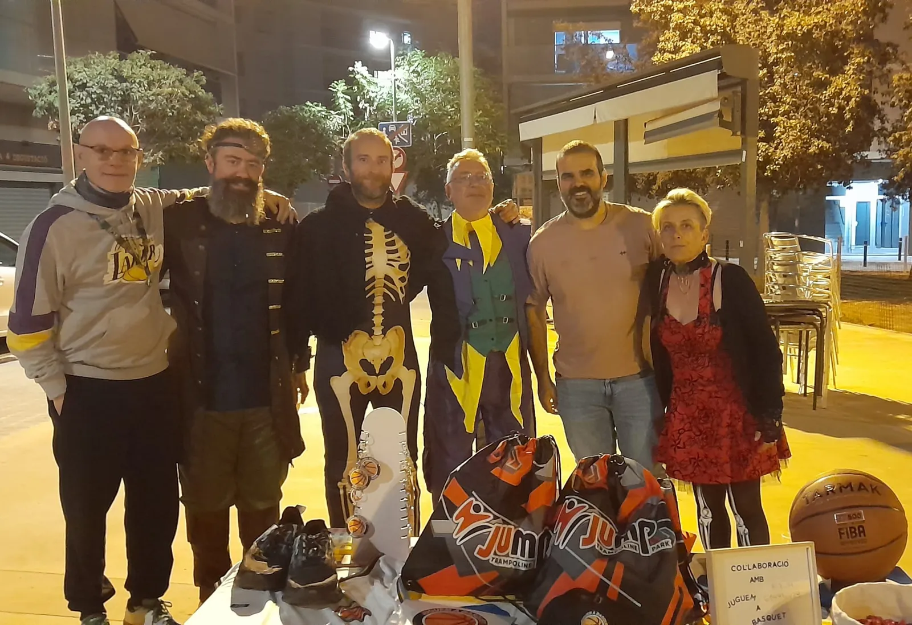
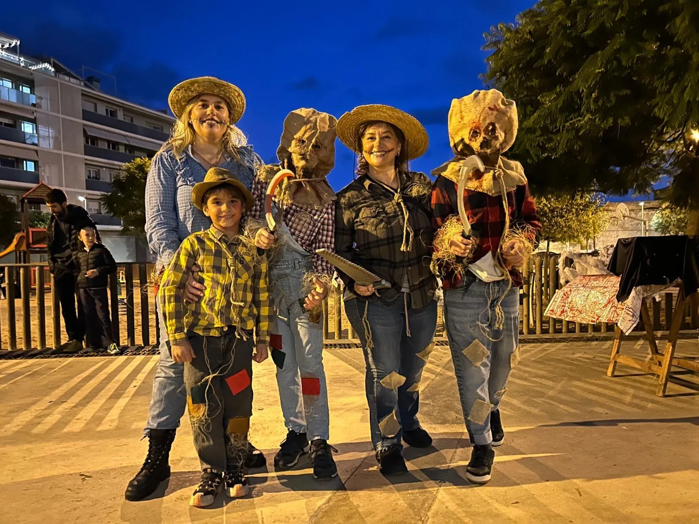
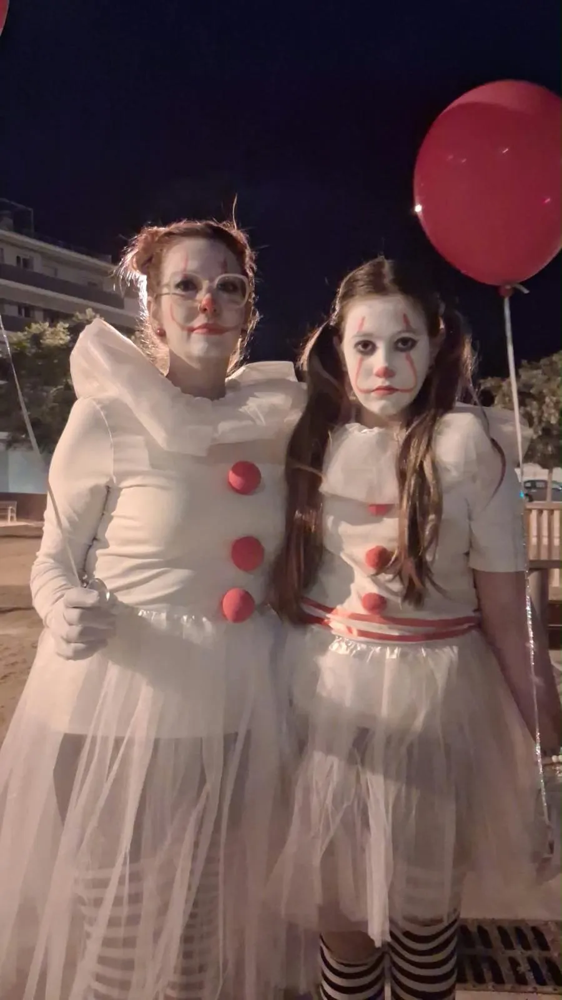
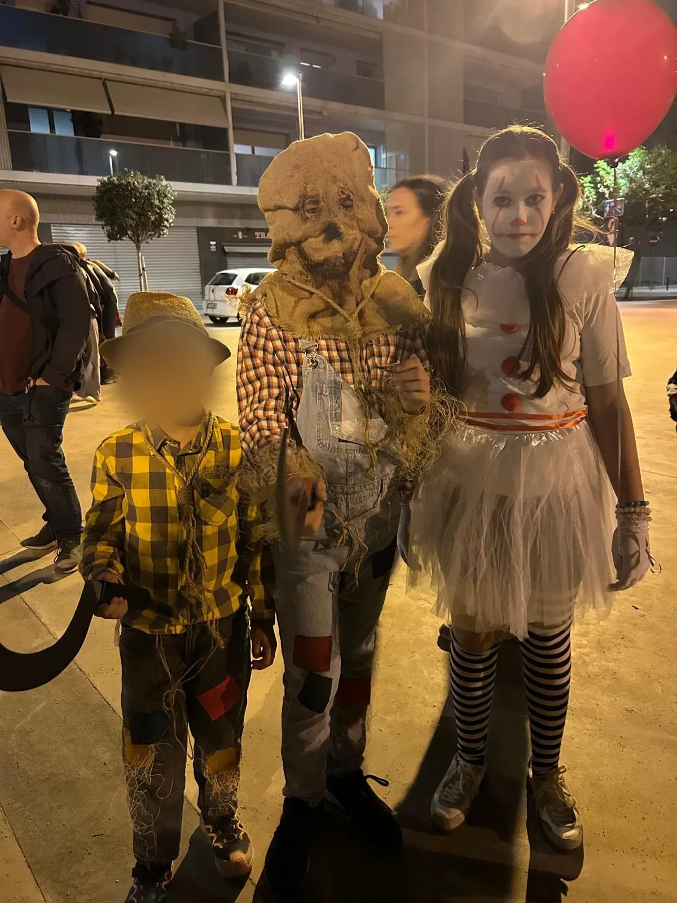
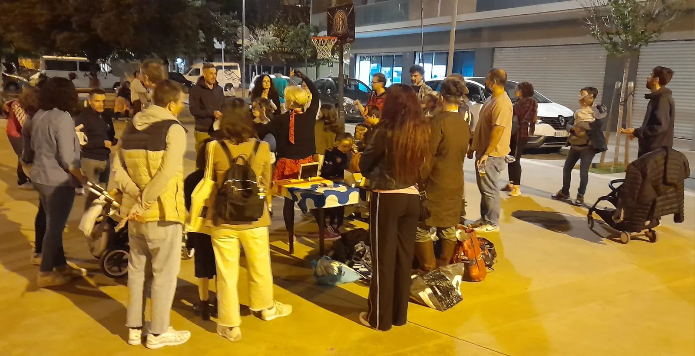
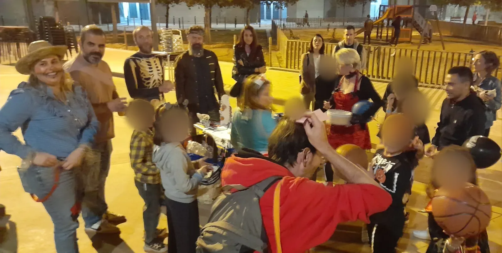

AmpliaCelebrada
Casagemas
Halloween & Castanyada · Mateu Rotger

AmpliaHalloween & Castanyada · Mateu Rotger
El 31 d'octubre vam omplir la plaça de Mateu Rotger, al barri de Casagemas, de disfresses, pilotes i mainada. Va ser una tarda pensada per a la canalla, amb Halloween, castanyada i bàsquet de carrer, organitzada amb l'AVV Iris-Sol-Casagemes.
Els nens i nenes van poder jugar amb la cistella i vam fer un sorteig de regals que va posar a prova la sort de la mainada. Vam compartir la tarda amb els veïns i veïnes de l'AVV Iris-Sol-Casagemes, perquè el bàsquet de carrer també és això: fer barri al voltant d'una cistella.






